Hi! This is Patrick. I acquired a degree in Computer Engineering from Texas A&M University in May 2017. I am working as an assistant in NetBot Laboratory at Texas A&M University. My current focus is developing software to enable that robots or vehicles could use camera images to achieve the goal of simultaneous localization and mapping. I am passionate about developing software, learning new technologies, and solving problems. I hope that I can utilize my skills to make a small impact. Please look around on my web to see some interesting projects that I had accomplished. Happy coding and hacking.
skills
I have strong interests in the following professional fields, and has developed relevant skills in each field.
A web browser-based multiplayer arena-fighting game
Watch this video presentation to know more about the game.
Introduction
Slime Fighter is a class project for CSCE 315 Programming Studio at Texas A&M University. The game is a web-based application. When the game server turns on, two or more players can join the game simply by entering the web address in their browser. Each player needs to fight against one another for victory.
How to play
If you take 100% damage, you die.
If you hit the goal the same color as you, you die.
First player to lose all of their stock loses.
Development Tools
Automatic Map Initialization
Introduction
We, human beings, use our eyes to identify where we are. How do robots or autonomous vehicles to find their position in an unexplored environment by using only camera sensor? Visual simultaneous localization and mapping (visual SLAM) is one of the algorithms to achieve the goal. In the features-based SLAM, we use distinct features in two corresponding images as landmarks to compute how much distance we moved.
The project implements the automatic map initialization in ORB-SLAM. ORB-SLAM is the current state-of-the-art visual SLAM algorithm. The project goal is to automatically select a proper model to compute the progression distance based on different input scenes. In the two-view geometry, the model will be the homography matrix if the scene is dominated by planar objects whereas the model will be the fundamental matrix if the scene is dominated by non-planar objects. The implementation uses a score function to evaluate the model selection. After a proper model is selected, camera poses and the relative progression can be calculated correctly.
Results
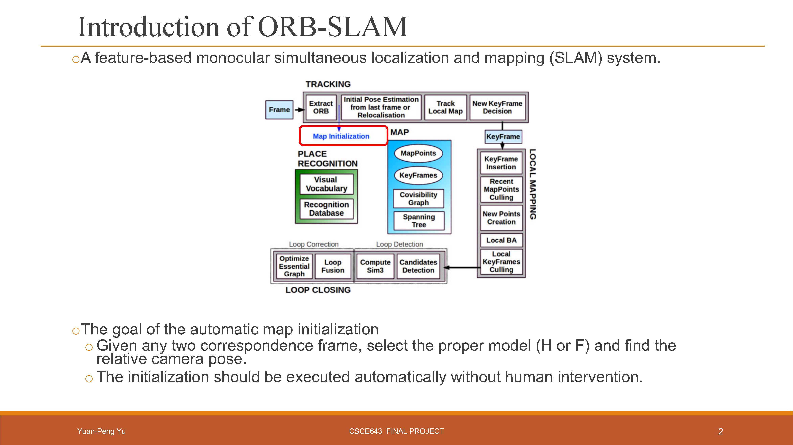
ORB-SLAM is a feature-based SLAM algorithm. In order to track features correctly, the map initialization is a crucial step. The project goal is to automatically select a proper model (H or F) based on the corresponding input images.
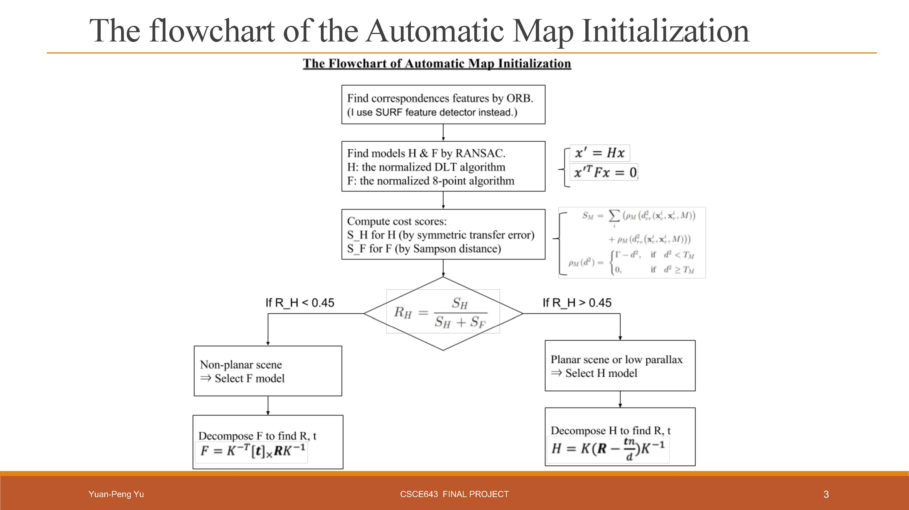
We compute the homography matrix H and the fundamental matrix F, and calculate score functions (S_H and S_F). ORB-SLAM suggests a heuristic function R_H. If R_H are greater than 0.45, the scene is dominated by planar objects and the model should be the homography matrix H. Otherwise, the fundamental matrix F will be selected as the model.
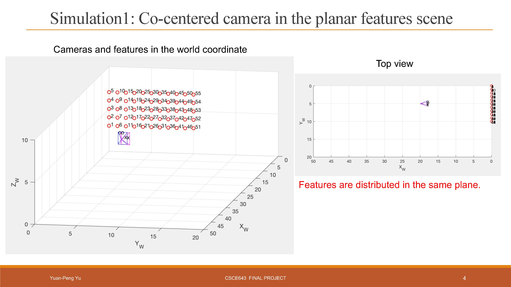
Simulation Settings:
To verify the algorithm, we generate a world scene. Cameras (the triangular pyramids) and feature (the red dots) are placed in the 3-dimensional world coordinates. In this simulation, camera only performs a rotation and features are distributed in the same plane. We expected that the algorithm should selected H as the model.
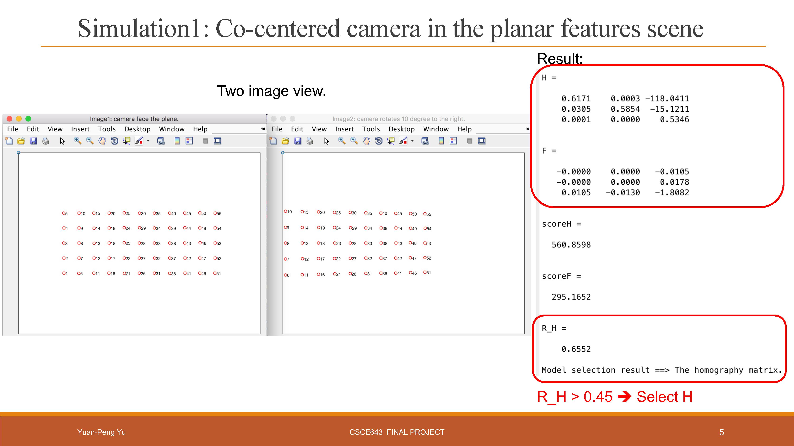
Simulation Results:
The right side is our computed results. The model H is selected. This meets our expectation. We can also find the camera poses. The left side recovers the view of the camera from two positions.
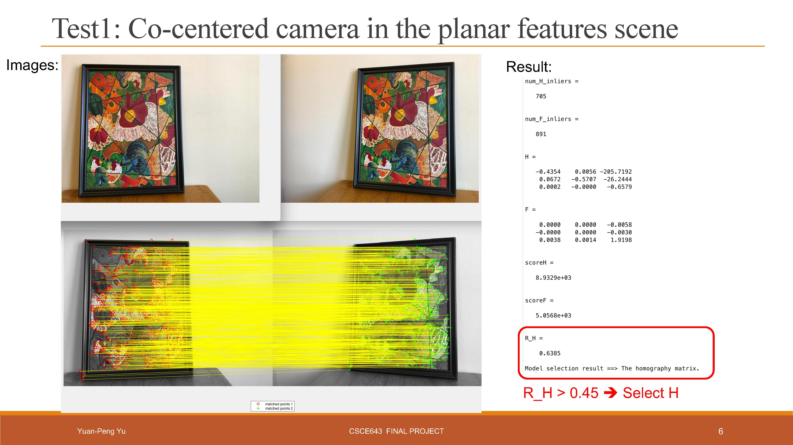
Realistic Results:
We use a realistic example to verfiy the algorithm again. The features in the images are distributed on a plane. And, yes, our algorithm select the H model, which meets our expectation.
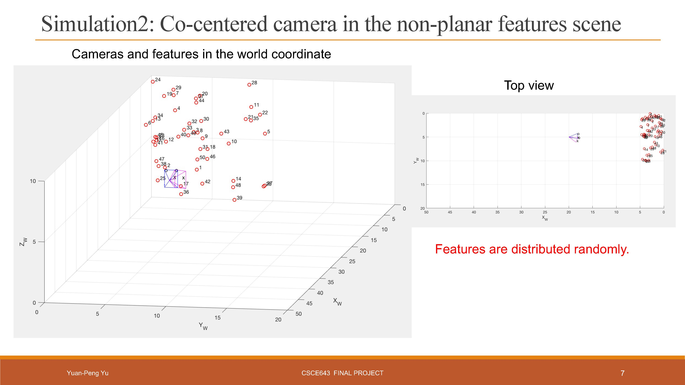
Simulation Settings:
In this simulation, the camera poses (the triangular pyramids) are co-centered and the features (the red dots) are distributed randomly.
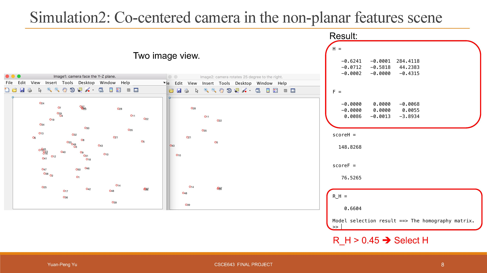
Simulation Results:
The right side is our computed results. The model H is selected because camera only perform rotations. We can also find the camera poses. The left side recovers the view of the camera from two positions.
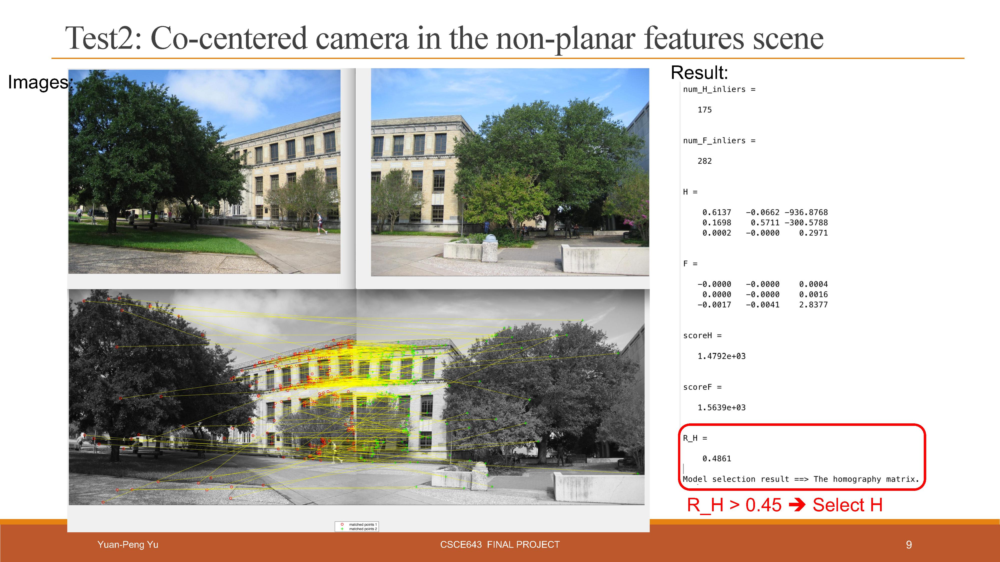
Realistic Results:
In this realistic example, the image pair is taken before and after a camera rotation. Features in the images are distributed randomly. Our algorithm select the H model, which meets our expectation.
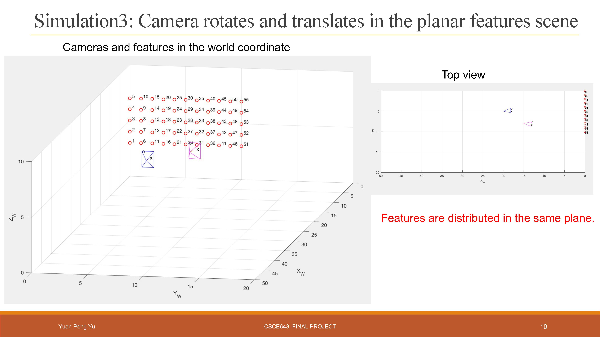
Simulation Settings:
In this simulation, the features (the red dots) are distributed on a plane. However, the two triangular pyramids means that the camera has moved and rotated from the position one to the position two.
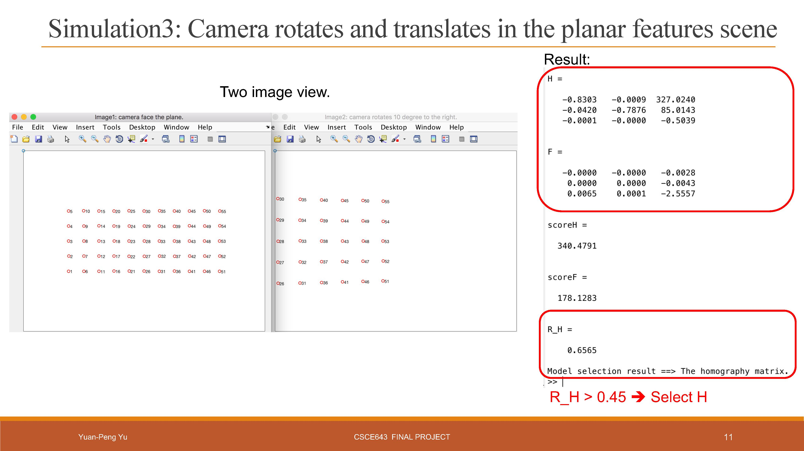
Simulation Results:
The right side is our computed results. The model H is selected because the features are planar. We can also find the camera poses. The left side recovers the view of the camera from two positions.
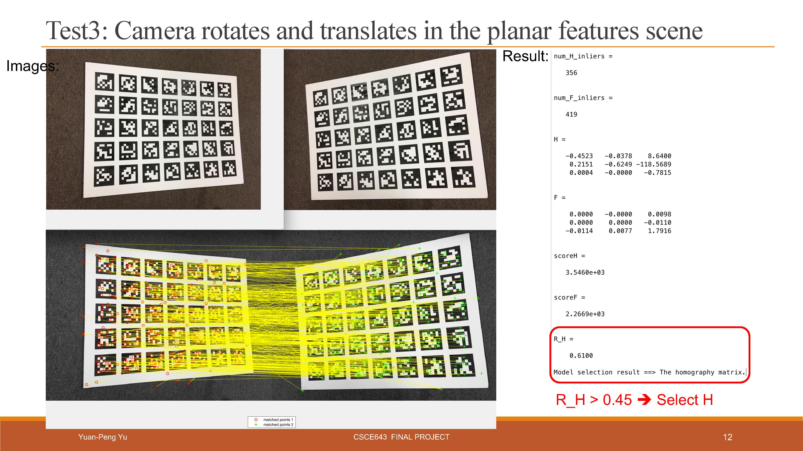
Realistic Results:
In this realistic example, the image pair is taken before and after camera rotates and translates. Though features in the images are distributed randomly, they are on the same plane. The model H should be selected, and our algorithm gets the same result.
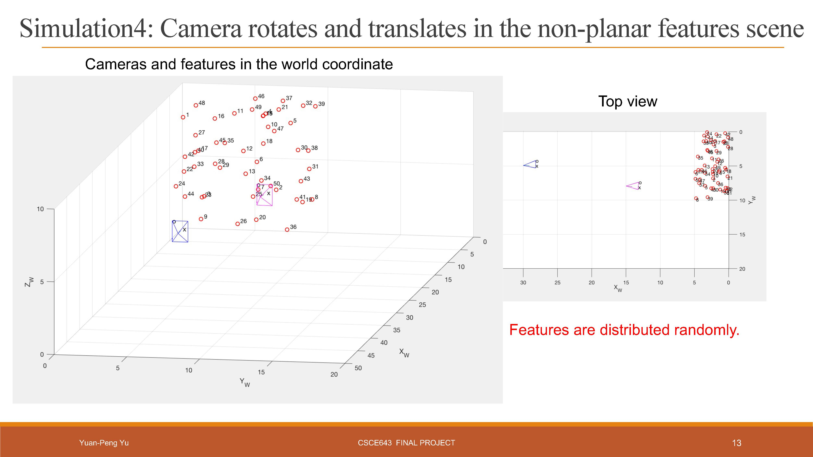
Simulation Settings:
In this simulation, the features are non-planar and are distributed randomly. The two triangular pyramids means that the camera has moved and rotated from the position one to the position two..
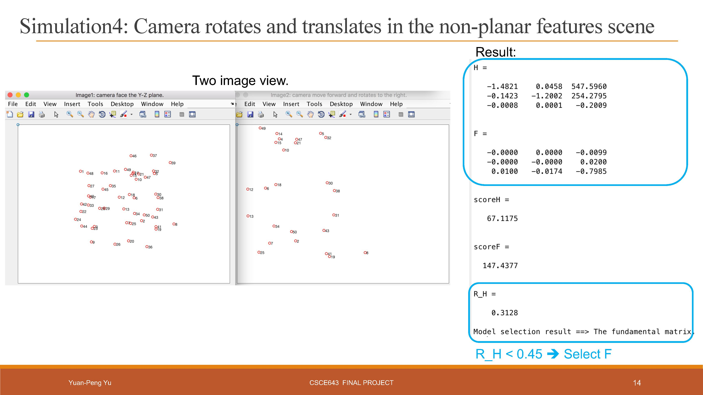
Simulation Results:
The right side is our computed results. The model F is selected because the features are non-planar. We can also find the camera poses. The left side recovers the view of the camera from two different positions.
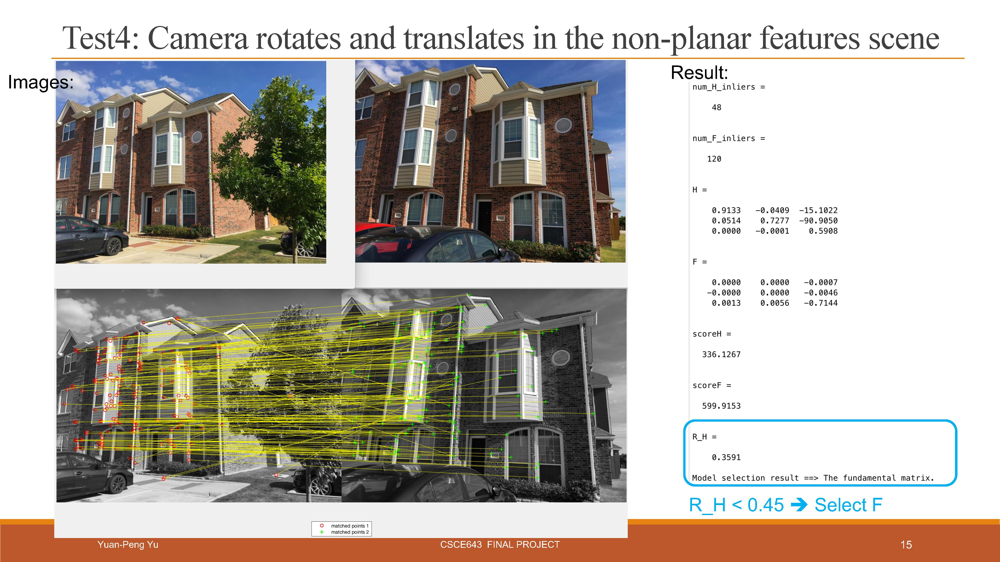
Realistic Results:
In this realistic example, the camera (the triangular pyramids) perform a rotation and a translation and the features are non-planar. The model F should be selected, and our algorithm gets the same result.